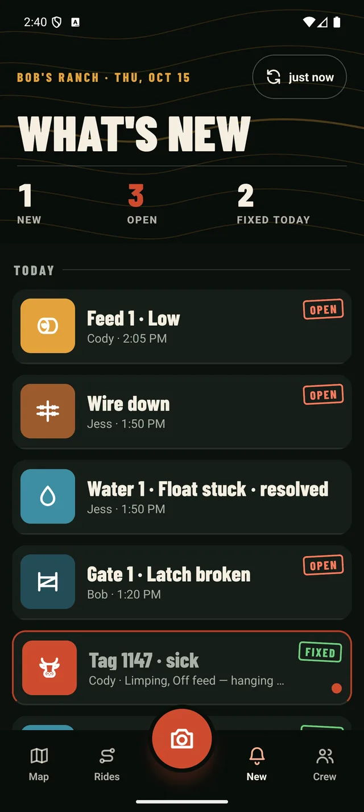
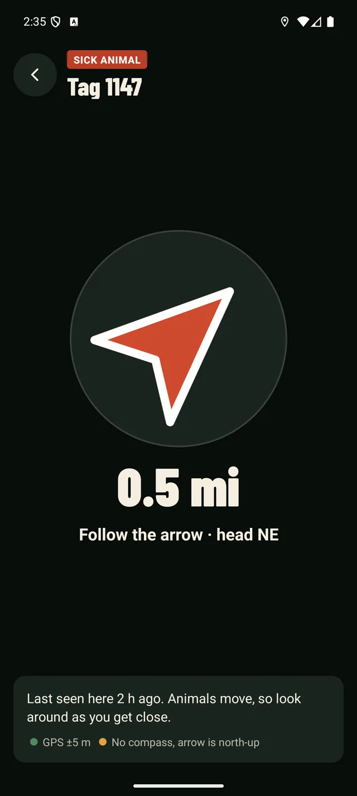

From one hand to the next
The radio call is gone by supper. The pin isn't.
-
Step 1 · Out in the pasture
10sec
Pin what you find
Snap a photo with the ear tag in frame and tap what's wrong: sick, feed, water, fence or gate. GPS and time fill in on their own, and the buttons work with gloves on.
-
Step 2 · Still no bars
0bars
Saved on the phone right away
Nothing waits on a signal. The photo, the note and the pin are on your phone the moment you tap save, marked as waiting to sync.
-
Step 3 · Back at the house
1arrow
Someone else rides out and fixes it
Once it syncs, the whole crew has the pin. Whoever goes next taps Take me there and rides straight to it, then marks it resolved. The owner sees the whole trail from town.
For owners and managers
See what the crew found today, and what's still open
Every pin shows who found it, when, with the photo, and who fixed it. Tanks, gates and feed stations keep their own history, so nothing depends on someone remembering to tell you.


Take me there
Tap the pin. Follow the arrow.
An arrow points straight at the sick cow or the broken float, and the distance counts down as you ride. It doesn't need roads, a signal or anybody describing which draw.
- Works offline. Download the ranch map once at the house, with sharp aerial photos down to the fence posts.
- Same map for everyone. The ranch's own pins, not public trails or somebody else's waypoints.
- Rides a new hand can follow. Record a ride and name it, and the next person can follow it to the right water.
Built for horseback and the side-by-side
Made for where the work happens
To pin it
Camera opens first. Photo, one tap, save.
Smallest button
Every target is big enough for a gloved thumb in the sun.
Signal needed
Everything saves to the phone first and syncs later.
Hardware
The phone you carry and the tag the cow already wears.
Treatment records with withdrawal dates
Log which animal got which drug, and Ranch Hand tracks the day its withdrawal period ends. We're building it with ranches on the list, so tell us if it matters to you.
2027
Field test
Out on a working Wyoming ranch
Ranch Hand rides out with working hands in Wyoming in June 2027: real cattle, real feed runs and no cell signal. Ranches on the list get the next spots to try it.
Early access
Put your ranch on the list
Five quick questions. We'll reach out before the spring beta, and founding ranches keep their early price for as long as they stay.
You're on the list
Thanks. We'll be in touch before the spring beta.